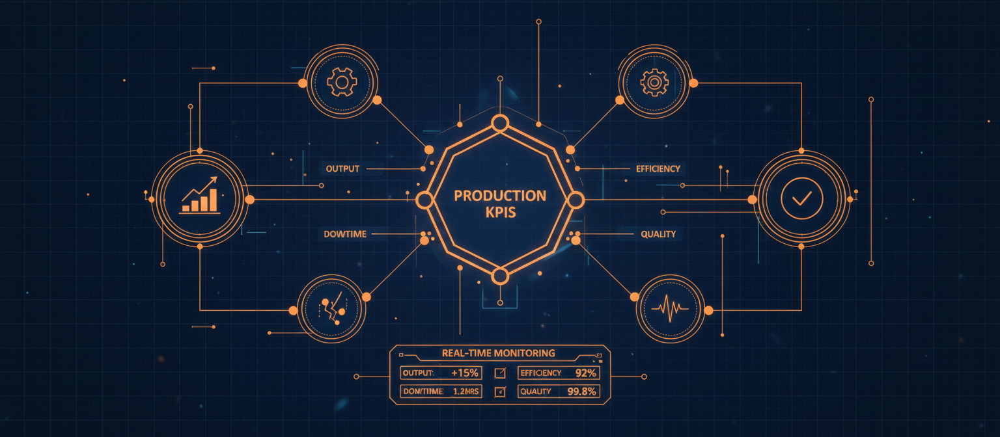
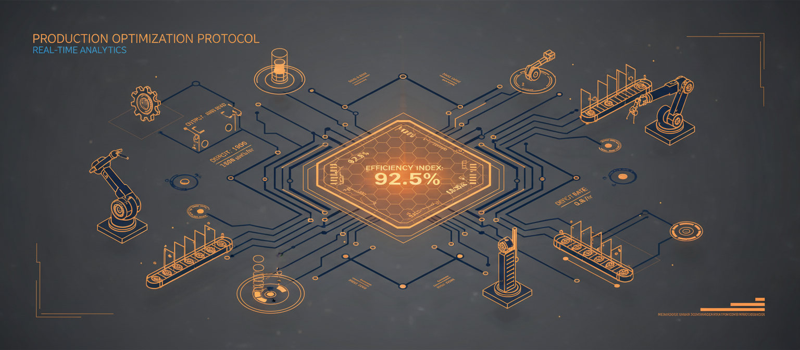
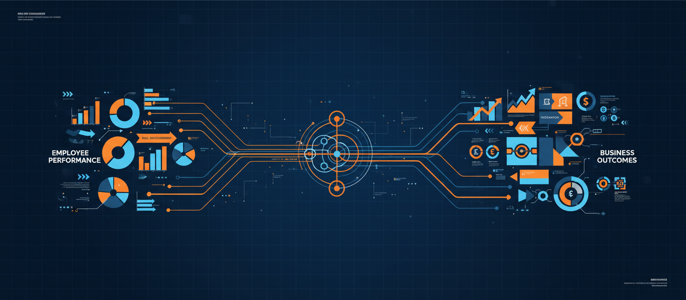
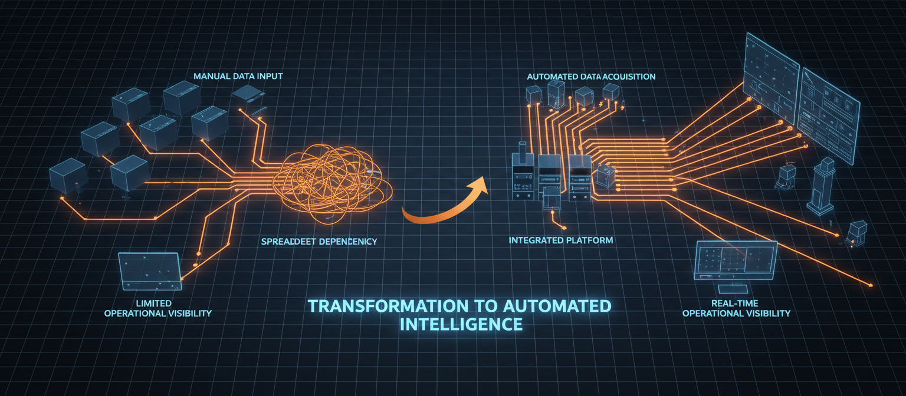
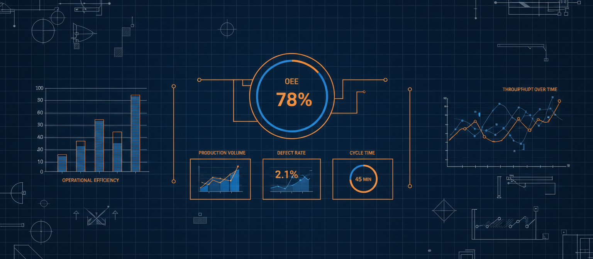
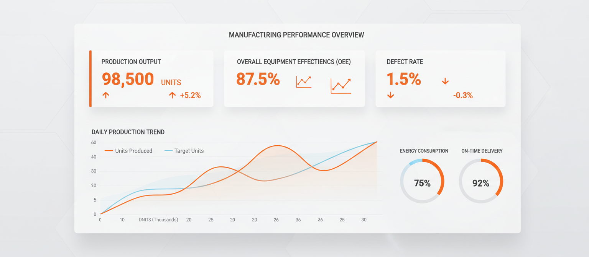

What Is KPI Management? A Practical Guide
Learn how KPI management works, how to create effective KPIs, and turn performance data into action.
Explore practical resources on KPI management, manufacturing performance, production efficiency, workforce performance, reporting, and operational excellence.
A practical guide to the production, quality, efficiency, workforce, and operational KPIs manufacturing teams can use to measure and improve performance.
Learn how KPI management works, how to create effective KPIs, and turn performance data into action.

Explore key production metrics for output, efficiency, downtime, quality, and target achievement.

Understand the production efficiency formula, calculation examples, and how to interpret results.

Create measurable employee KPIs that connect daily responsibilities with business outcomes.

A practical approach to reducing spreadsheet dependency and improving operational visibility.

See how effective KPI dashboards organize production, workforce, and operational data.

Our most comprehensive guide outlining the foundations of building a reliable performance framework for modern production lines.
Read Complete GuideFactorKPI bridges the gap between raw data and operational success. Transition from static spreadsheet models to a live, automated ecosystem.
FactorKPI is designed for manufacturing companies, factories, industrial operations, shift-based teams, multi-site organizations, and other businesses that need structured performance management.
Yes. FactorKPI is built to support your custom shift schedules, KPI weights, formulas, inspection checklists, and approval hierarchies without forcing a rigid workflow.
Absolutely. FactorKPI provides multi-site rollups for executives while allowing each plant, line, or site manager to maintain localized targets, operators, and daily reporting.
Yes. FactorKPI bridges machine outputs and frontline human tasks, connecting shift handoffs, quality checks, and equipment downtime with individual and team KPI scoring.
Yes. Frontline workers access mobile-friendly interfaces to view shift targets, submit progress, upload photo evidence, and log downtime in seconds.
Yes. Role-based permissions ensure that executives see macro site comparisons and KPI summaries, while supervisors get hour-by-hour shift logs, machine alerts, and line metrics.
Start standardizing data across shift operators, site managers, and executives. Receive your custom implementation roadmap today.